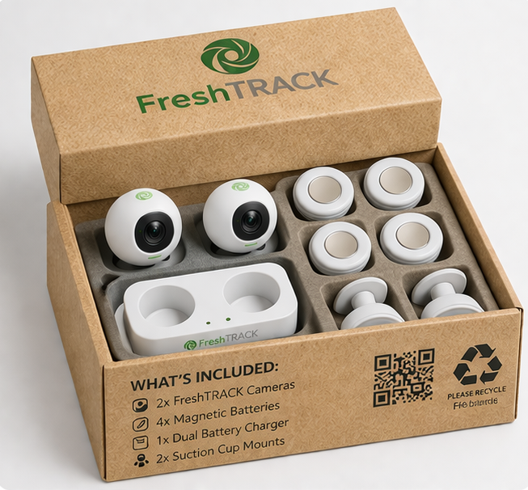

FreshTRACK
Overview
FreshTRACK is an AI-powered fridge-management system that turns any conventional fridge into a smart fridge using in-fridge cameras and a mobile app. The system tracks fridge contents in real time, reduces household food waste, supports meal planning, and saves households time and money.
The venture was developed as part of the New Enterprise Development module at Dublin City University, where our team progressed from initial ideation through to a full investor-ready business plan and a live Dragon’s Den-style pitch before a panel of six investors.
67% of people forget what is in their fridge (FreshTRACK Survey, 2025). Irish households waste an average of €700 per year on food.1
FreshTRACK solves this with a one-time hardware purchase and a companion app. No subscription. No complexity.
The Product

Key Numbers
💰 Investment Ask
€100,000 for 9.5% equity
€60k product development €40k marketing
📈 Market Opportunity
TAM $2.83bn SAM $1.61bn SOM $4.8M (Europe)
📊 Financial Projections
30,000 units by FY30 58.5% CAGR over 4 years Profitable by 2028
Venture Development Journey
This project was built across six assignments, each representing a distinct stage of the startup development process:
Financial Snapshot
| Metric | Value |
|---|---|
| Unit Price | €121.57 (excl. VAT) |
| Unit Cost | €85.09 |
| Gross Margin at Launch | 30% |
| Gross Margin by FY30 | 42.3% |
| EBITDA Margin by FY30 | 29.6% |
| Break-even | 2028 |
| Units by FY30 | 30,000 |
| Revenue CAGR | 58.5% over 4 years |
FreshTRACK’s pricing and market validation was based on 64 survey respondents and two focus groups across Ireland, Germany, Canada, and the USA. The Van Westendorp Pricing Model was applied, filtered to respondents aged 24+ spending €300+ per month on groceries.
Reflections
This was the most applied and team-oriented project of my degree. Taking an idea from a blank page to a live investor pitch taught me things no classroom session could – how to pressure-test assumptions, how to tell a story with numbers, and how to disagree productively with teammates under deadline pressure.
The Dragon’s Den format was particularly valuable. Knowing that six real investors would challenge every number forced a level of rigour that I carried into every other project afterwards.
Cover image: FreshTRACK brand assets, Team 22, DCU New Enterprise Development 2026